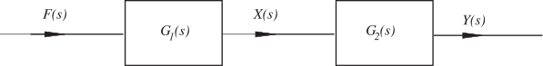

Long description: fig8

Alt text: A block diagram illustrating a signal flow from an input \(F(s)\) through two cascaded transfer functions, \(G_1(s)\) and \(G_2(s)\), resulting in an output \(Y(s)\).
This description was generated by AI and has not been verified by a human. If you spot an error, please use the feedback link below.
- The diagram shows a signal path starting from the input, labeled \(F(s)\).
- This input signal \(F(s)\) enters the first block, which represents the transfer function \(G_1(s)\).
- An intermediate signal, \(X(s)\), is shown exiting the block \(G_1(s)\) and flowing to the next block.
- The signal \(X(s)\) then enters the second block, which represents the transfer function \(G_2(s)\).
- Finally, the output signal, labeled \(Y(s)\), exits the second block \(G_2(s)\).
- The overall structure depicts a series connection where the output of \(G_1(s)\) serves as the input to \(G_2(s)\).